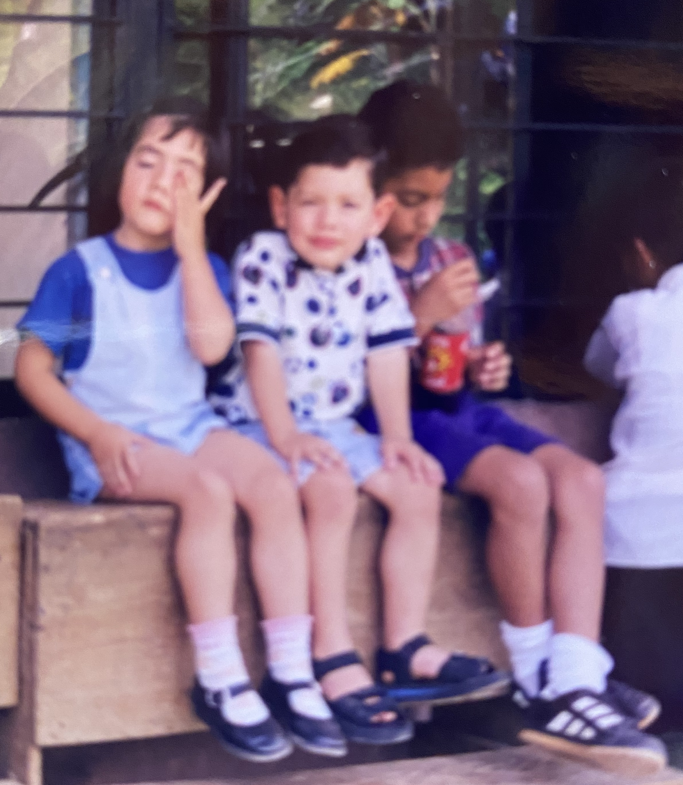
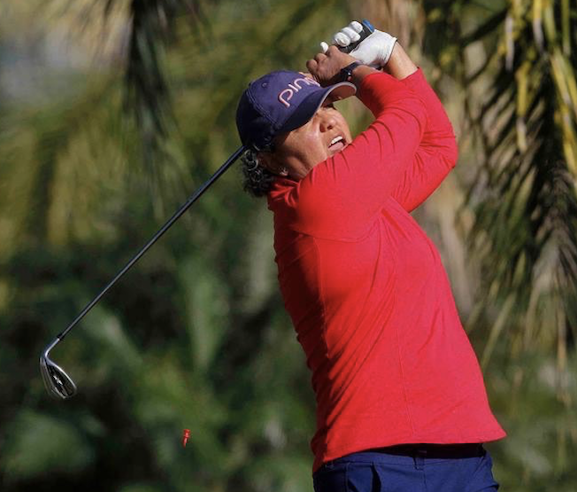

Blog editorial

Blog editorial (5)
Editorial
¿Qué cambios habrá en las plataformas de educazion.net?
Written by Hilda MagañaMuchas personas nos han preguntado si va haber cambios en nuestras plataformas de primaria y secundaria para el próximo ciclo escolar, así que en esta entrega les explicaré los cambios y actualizaciones para el próximo ciclo escolar de los niveles de primaria y secundaria.
Lo primero que quiero mencionar es que hemos actualizado todas las actividades SCORM que son las evaluaciones semanales. Anteriormente era necesario el plugin de Adobe Flash Player para trabajar y por tanto no era muy recomendable el uso de tabletas. Ahora que se actualizaron todas estas actividades de formato SCORM a javascript, nuestra plataforma será completamente amigable con cualquier dispositivo móvil y cualquier navegador web. Esto además, corregirá los problemas que algunos experimentaban por desconexión o conexión intermitente, al almacenar las calificaciones en los SCORMS. El problema se solucionó con la migración a javascript. Ahora todas las actividades SCORM tendrán intentos ilimitados y cada intento será almacenado; si el estudiante, por ejemplo, ingresa a la evaluación semanal y se sale sin contestarla o contestarla parcialmente, guardará este primer intento con la calificación obtenida, si vuelve a ingresar y lo contesta, guardará el segundo intento con la calificación obtenida, y así sucesivamente; de manera que ahora los padres sabrán cuantas veces el estudiante ingresó a la evaluación, cuántos intentos realizó y las calificaciones de cada intento, solo que la calificación que se promediará será el intento más alto.
Se hizo una revisión minuciosa de todos los contenidos y se actualizaron aquellos que resultaban obsoletos o bien, utilizaban tecnología Adobe Flash, de manera que casi podemos decir que el 99% de la plataforma es funcional a los dispositivos móviles, solo hemos tenido problemas con la actualización de algunos mapas interactivos de geografía, pero esperamos en breve poderlo solucionar y actualizarlos también a javascript.
Por otra parte, algunos padres han reportado errores en la plataforma (por cierto, son muy pocos, representan el 0.02% de toda la plataforma), hemos tenido el cuidado de atender estos detalles y actualizarlos.
Se ha agregado más contenido multimedia adicional, sobre todo en aquellas lecciones que era necesario agregar, como videos que explican procesos matemáticos, lecciones de historia, ciencias, etc. Hemos incorporado material de alta calidad diseñado por los mejores creadores de contenidos que inclusive han obtenido premios y reconocimientos, todo este material se adjunta como contenido adicional para reforzar el aprendizaje en cada lección de estudio.
Certificación
Ahora educazion.net está registrada en Miami, Florida como una Institución Educativa aprobada por la asociación de padres educadores en el Estado de Florida, el nombre oficial es educazion.net International School Corp nombre registrado en como una Corporación sin fines de lucro, y registrada ante la comunidad de educadores en el hogar más importante de Florida, la FPEA, pueden consultar el sitio web en el siguiente link: https://fpea.com/
Como saben, en Estados Unidos la educación no es legislada por el gobierno, pero es facultad de las diferentes asociaciones educativas el reconocer a las instituciones educativas. Al ser educazion.net un portal de educación en casa (homeschool) le corresponde a la FPEA registrarla. También es conocido por todos que en Estados Unidos y en Florida la educación en el hogar está legislada y reconocida como un tipo de educación válida siempre y cuando la escuela tenga un registro, lo cual tenemos. Puede consultar nuestro registro en el siguiente link: https://fpea.com/groups/educazionnet-international-school-corp
Así que sí, continuaremos ofreciendo a nuestros estudiantes boletas de calificaciones, ahora que ya somos una Institución registrada, no necesitamos el apoyo de una Umbrella School como Royal Hollow Academy. Educazion.net ahora emitirá las boletas oficiales y debido a que tienen validez en los Estados Unidos de América, tal y como lo determina el Acuerdo 286, también podrán ser reconocidas en México y cualquier parte del mundo. Aquellos que requieran apostillado, también estará disponible.
Si inscribiste a tus estudiantes antes de septiembre, podrás solicitar la boleta de Royal Hollow Academy tal y como nos comprometimos, pero si inscribiste a tus estudiantes a partir del mes de septiembre, podrás solicitar la boleta de educazion.net International School Corp, con la misma validez que la de Royal Hollow Academy.
Recuerda que es responsabilidad de los padres tramitar las revalidaciones y equivalencias correspondientes. También entendemos que la autoridad hace lo que quiere y depende mucho del humor de la persona en ventanilla el asunto del trámite, pero ahora le toca a los padres librar la batalla de hacer valer sus derechos. Nosotros hemos ido muy lejos y avanzado mucho, pero no hemos logrado hacer entender a los padres que es su responsabilidad exigir que la autoridad cumpla con su deber, esto solo le corresponde a los padres, que ellos puedan empaparse de la información que requieren para luchar por los derechos que la Ley les otorga pero que la negligencia de ciertas autoridades les niega.
¿Cuándo estará lista la nueva plataforma?
Estamos trabajando muy duro para lograr liberarla el sábado 1 de agosto, confiamos en que así será. Sin duda será el recurso más completo y robusto con todo lo necesario para desarrollar un ciclo escolar completo de aprendizaje, al costo más accesible.
¿Cuánto costará?
El costo seguirá siendo el mismo, no cambiará, el costo por estudiante continuará en 2,000 MXN para México y 125 USD para el extranjero.
Recuerda que toda esta información es para educación básica: primaria y secundaria. El bachillerato prepaenlinea.mx funciona de manera distinta, aunque es parte de educazion.net su forma de trabajo es muy diferente, si necesitas información sobre prepaenlinea.mx ingresa al sitio oficial.
Sabemos que quizá tengas más preguntas, pero todas ellas serán contestadas cuando liberemos nuestro nuevo sitio web y plataforma, mientras tanto te pedimos que seas paciente y confíes que estamos trabajando para ofrecerte una educación de calidad al mejor costo.
En algunas ocasiones, educar en el hogar resulta un poco frustrante, es como si un pintor o un escultor estuviera formando y creando una obra de arte durante 18 años. Pasan los años y creemos que no hemos avanzado en nada, en ocasiones, parece que nos sentimos los seres humanos más grandes y victoriosos. Sin embargo en los momentos de dificultad pensamos en tirar la toalla y regresar a donde estábamos.
La clave para lograrlo no ser los mejores padres, los más educados, los más perfectos, aquellos que nunca se equivocan, nada de esto sirve, la clave es una sola palabra: Perseverar.
Así es, Dios no espera que nunca cometa errores, Dios está esperando que persevere en obedecerle, no espera que sea completamente perfecto, solo espera que persevere en hacer lo correcto. No conozco a nadie que haya logrado el éxito y diga: nunca me equivoqué, jamás cometí errores, pero sí conozco a muchas personas que han dicho: nunca me rendí.
A veces queremos ver el cuadro completamente terminado en la vida de nuestros hijos y solo vemos un vago boceto de lo que el reino de Dios debe ser en sus vidas. ¡No te rindas mi amado, no lo hagas! ya tendrás tiempo para admirar la obra terminada y entonces podrás decir que valió la pena, mientras tanto solo te queda trabajar y trabajar sin descanso hasta ver concluida tu labor.
En ningún sentido pienses que estás perdiendo el tiempo ¡en ninguna manera! la gente pierde el tiempo vendiendo celulares, cremas de belleza, adiestramiento canino, cocinando, pintando casas, pero nunca jamás estarás perdiendo el tiempo mientras lo estés invirtiendo en la vida de un ser eterno, llamado a vivir por siempre en comunión con Dios, ¡qué glorioso trabajo es invertir nuestra vida, tiempo, recursos, esfuerzos en hombres y mujeres que nunca mueren, que fueron diseñados para vivir una eternidad adorando y exaltando al Creador de todo! quien invierte en una vida, está abonando al reino de los cielos, tiene el privilegio de ser colaborador de Cristo en esta vida, a esto fuimos llamados a ser.
Nuestros hijos son la herencia que Dios nos ha dado en esta tierra, solo nosotros tenemos el derecho y la autoridad de guiar esta herencia hacia el Dios vivo, nada ni nadie puede quitarte este derecho, pues Dios ya te lo dio desde antes de la fundación del mundo, así que no debemos de temer cuando la gente dice: ¿tu quién eres par enseñar a tus hijos? no eres un maestro y no estás preparado.... ¡mentira! tú eres un hijo de Dios, que ha sido llamado por para extender su reino a esta tierra, tú tienes la Palabra de Dios en tus manos y en tu corazón, a tí se te ha confiado y delegado la vida de tus hijos en tus manos, solo tú eres la única persona capacitada para hacerlo, Dios te diseñó y equipó para esta labor, tienes el diseño perfecto de padre que tus hijos necesitan para hacerlo, Dios no se equivoca, todo lo hace perfecto en su tiempo.
Habra días llenos de gloria, seguidos por otros de interminables lágrimas, pero ¿quién dijo que sería fácil formar discípulos? una cosa si sé, el convertirnos en colaboradores de Dios es lo mejor que nos ha podido ocurrir en nuestra vida.
Bienaventurados los que lloran, porque ellos recibirán consolación (Mt. 5:4)
¿Entonces qué haremos? ¿confiaremos en nosotros? por su puesto que no, las misericordias de Dios son nuevas cada mañana. Dios no tienen nietos, todos podemos llegar a ser hijos de Dios, y ¿qué significa esto? que Dios está más interesado en nuestros hijos que lo que estamos nosotros, porque antes que fueran nuestros hijos, primero fueron sus hijos. Esto me permite descansar en Él, solo debo rendirme por completo a Él, esperar y descansar en Él.
Los planes de Dios y propósitos para nuestros hijos son mucho más altos y mejores que los nuestros. Para algunos padres, lo más importante es que sus hijos lleguen a ocupar algún puesto importante, que sean reconocidos por otras personas, o que tenga un buen trabajo. Pero estos no son los planes de Dios.
Los planes de Dios son eternos, trasciende de generación a generación, van más allá de una posición en el mundo o de obtener ciertas cosas. Solo necesitamos conectarnos con Dios para obtener la revelación sobre su voluntad en la vida de nuestros hijos, recuerda que nadie más tiene esta revelación. Dios no le va hablar a la maestra de quinto año, tampoco al profesor de natación, o al de inglés, ellos cumplen con enseñar o transmitir una habilidad o conocimiento, pero los verdaderos planes, ¡tú los debes conocer! tu eres el padre o la madre, se trata de tu herencia, ¿le encargarías la administración de tu herencia a tu vecino?

Sabemos que esta pandemia nos ha desgastado, quizá en este momento ya no aguantas más estar con tus hijos, toma un respiro, cierra la puerta de tu habitación y medita un poco en todas las cosas que Dios ha hecho en tu vida, media sobre aquellos momentos de oscuridad en los que Dios milagrosamente te mantuvo con vida. Toma fuerzas. Dale espacio también a tus hijos, no tienen que estar todo el tiempo ocupados, realizando tareas, actividades o deberes. Dales tiempo para estar en paz y quietud, disfrutando un momento a solas, de silencio, de reposo. Invierte tiempo para reír, ver memes, para hacer cosas bobas que los hagan recordar cuando crezcan cómo era su mamá, lo divertido que era su papá.
Ahora estoy invirtiendo un tiempo de esta cuarentena para estar con mis padres, ¡cómo me he reído! esa risa me hacía falta, ayudarlos en su vejez me hace mucho bien, me hace recordar tantas cosas que sembraron en mi vida. Esos son los recuerdos que ahora debemos sembrar, para que cuando vengan los momentos difíciles ellos tengan algo que les ayude a continuar… que les ayude a perseverar como tú un día lo hiciste.
Ejercitarnos debería ser una actividad fundamental en nuestra vida. Casi tan importante como el comer, descansar o aprender. Como padres tenemos la responsabilidad de incentivar el que nuestros hijos sean fisicamente activos. Estamos viviendo en medio de un mundo ocupado y contaminado, con muchas prioridades pero que es negligente con las necesidades más básicas y simples de la vida, como comer de manera saludable, tener los tiempos de descanso correctos o practicar algún deporte.
He escuchado a muchos pastores obesos citar 1 Timoteo 4:8 donde Pablo le dice a Timoteo que el ejercicio corporal para poco es provechoso, pero esto no significa que ejercitarse sea malo, al contrario ¡es urgente que lo hagamos! Recordemos que en los tiempos de Pablo los seres humanos no pasaban el tiempo sentados frente a una computadora o televisor, tampoco tenían coches, su vida estaba en constante movimiento. Ya no estamos en los tiempos de Pablo y, definitivamente la obesidad y el sedentarismo están matando lentamente a la población a nivel mundial.

Desde el momento que nos ponemos unos tenis y nos preparamos para lanzarnos a alguna actividad nuestro cuerpo empieza a manifestar bienestar en general. Lo primero que ocurre es que nos invaden las endorfinas, también conocidas como las hormonas de la felicidad. En el hipocampo comienzan a nacer nuevas neuronas y dependiendo de la intensidad del ejercicio se da inicio a la producción de testosterona, que entre otras cosas, repara las fibras musculares. Simultáneamente nuestro corazón bombea sangre oxigenada que llega a todos los rincones de nuestro cuerpo facilitando un ritmo fluido y fortaleciendo el importantísimo sistema inmune, en fin, no soy doctora o psicóloga del deporte, pero es seguro que en nuestro cuerpo comienzan a ocurrir cosas extraordinarias.
A nivel fisiológico existen grandes beneficios que igualmente podemos observar continúan tanto en el plano emocional como en el conductual. Imagina que estás frente a una gran pendiente, llevas un rato corriendo y la fatiga se hace presente, así que debes concentrarte para mantener tu ritmo, le dices entonces a tu cuerpo: “controla la respiración”, “no abras la boca”, “respira con la nariz”, “estás por llegar al otro lado, vamos sigue… no te canses” y de pronto…. Wow ¡Lo lograste! Subiste sin detenerte, venciste el cansancio y estrés por el que tu cuerpo atravesaba y como consecuencia te invade un enorme gozo, una sensación natural de bienestar y recompensa; entonces descubres que si te esfuerzas… lo logras. Ahora piensa que esto ocurre todos los días, poco a poco notas los numerosos beneficios de tu práctica y te vas convirtiendo en una persona mas valiosa ante tus propios ojos, un campeón ¿Qué crees que suceda entonces cuando llegue a tu puerta una situación de conflicto que debas enfrentar?Sencillamente te haces cargo ¿De qué manera? En la misma que todos los días has hecho con aquella gran pendiente.
Entrenar un deporte te ayuda a desarrollar una capacidad extraordinaria para enfrentar los retos de la vida, te enseña a mantener la calma, a no perder la concentración, a enfocarte en un propósito claro y objetivo, te enseña inteligencia emocional, aprendes a tomar decisiones en medio de la dificultad, te entrena para reaccionar ante el peligro, te hace perseverante y gradualmente invencible.
Cuando practicas un deporte de manera constante y permanente te conviertes en un campeón, y no porque seas pretencioso o te creas el mejor, sino porque todos los días aprendes nuevas maneras de superar tu pendiente y todos los días le ganas, por lo que se vuelve una costumbre monitorear tu condición como persona y por lo tanto tu autoestima. Permitiendo así crear en nosotros un espacio objetivo donde tanto la soberbia como los sentimientos de insuficiencia simplemente no caben, ya que has aprendido bien de lo que eres capaz.
Siempre que me encuentro ante una situación emocional, laboral, o bien, es preciso tomar alguna decisión importante, me meto al agua y comienzo a nadar, si no tengo alberca salgo a correr o agarro mis palos de golf, me desconecto y, siempre, en todas las ocasiones, después de la práctica, tengo la respuesta.
Mi padre desde niña me introdujo al mundo del deporte, practiqué de todo, he ganado diversos torneos, actualmente soy cinta negra en Tae Kwon Do, y si paso tan solo un día sin hacer algo de ejercicio me cuesta muchísimo trabajo dormir y descansar la mente. Mi padre tiene 86 años, mi madre 80, ambos caminan todos los días 5 km, y al último torneo de golf que invité a jugar a mi padre, todos se maravillaban de lo fuerte y lúcido que se encontraba, cuando digo la edad de mis padres las personas suelen sorprenderse, ambos son muy sanos, no padecen ninguna enfermedad y nunca, jamás, han dejado de moverse.

Mis padres actualmente
Considero que uno de los mejores regalos que mis padres pudieron darme en mi infancia fue el acceso a la práctica de diferentes deportes, mientras mis hijos estuvieron en casa, iniciábamos la rutina de cada día en la alberca, todos los días nadábamos, cuando se fastidiaron de nadar (porque así sucede) practicaron Tae Kwon Do, a José Pablo le encantan los deportes al aire libre, montañismo, escalar y caminar sobre la cuerda, Santiago vive trepado en la bicicleta de montaña y mi hija practica yoga.
Por esto y mil razones más quiero animarlos a que hagamos un esfuerzo por practicar el deporte como familia, invirtamos en ejercitarnos, entiendo que debemos atender nuestras necesidades espirituales y materiales, pero recordemos que somos el templo del Espíritu (algunos parecen más bien catedrales) y eventualmente daremos cuenta de lo que nos ha sido dado.
Precisamente en estos tiempos difíciles de pandemia, si en verdad queremos vivir una vida digna de ser experimentada, necesitamos ejercitarnos más que nunca.
Aprendizaje autodidacta, la mejor herramienta que debes enseñar a tus hijos a utilizar
Written by Hilda Magaña
¿Alguna vez escuchaste el dicho: ¡no le des un pez, enséñalo a pescar! el autoaprendizaje es una habilidad que todos los seres humanos tenemos, desde que nacemos la desarrollamos, solo que si no la utilizamos, se atrofia. ¿Qué es el autoaprendizaje? la Real Academia Española lo define con muy pocas palabras: aprendizaje hecho por sí mismo.
Ser autodidactas es una capacidad que tenemos todos los seres humanos para obtener conocimiento, habilidades y saberes por cuenta propia, a diferencia del conocimiento, el desarrollo de una habilidad como nadar, andar en bicicleta, manejar un auto, subirse a una patineta, tocar la guitarra y cualquier otra habilidad que requiera cierto movimiento, entrenamiento o destreza motriz, requiere que la persona invierta suficiente tiempo y atención en desarrollarla, en algunas ocasiones se requiere cierta instrucción previa, pero cuando eres niño ¿quién hace caso a ciertas instrucciones si tienes frente a ti una bicicleta o patineta?
El proceso de autoaprendizaje inicia con un deseo… deseo aprender a… y allí comienza el proceso. Pero también puede iniciar partiendo de una necesidad… necesito aprender a…
Ante cualquiera de estas dos situaciones (deseo o necesito) nuestros procesos sociales actuales nos imponen ciertas condiciones como la de buscar una academia para aprender, buscar un tutor o maestro, y cosas así, pero ¿qué tan necesario es esto? en realidad esto es una necesidad creada por nuestro contexto social que busca imponer ciertos estándares sobre el cómo se deben hacer las cosas.
Imagínate por un momento que tengamos que llevar a un bebé a una escuela o academia para que aprenda a caminar, cuando de manera natural y en el tiempo específico de cada bebé, simplemente se va a parar y caminar.
Así de absurdo ahora es el mundo en que vivimos, por una parte se nos quiere imponer la estandarización de cierto conocimiento o habilidad a través de “la escuela” academias, centros de entrenamiento, etc. Cuando el ser humano está diseñado para aprender de manera autónoma e independiente casi cualquier cosa que se proponga.
El peor lugar para atrofiar la mente y la capacidad de aprender es sin duda alguna la escuela. Un lugar cerrado, con muros blancos, lleno de niños y jóvenes de la misma edad, sentados en una silla, todos en silencio, siendo atendidos por una supuesta persona “experta” en ciertos saberes… ¡qué grave error! ¡qué mejor lugar para conocer la naturaleza que en un bosque! ¿a caso no será mucho mejor estar allí que observando un libro lleno de letras y con una sola fotografía de un bosque? parece locura, pero es la realidad de hoy.
El mejor lugar para aprender algo es haciéndolo, ¿cómo puedes enseñar la reproducción de plantas y animales? teniendo un huerto y una pequeña granja donde nuestros hijos experimenten y observen, un espacio familiar donde ellos puedan analizar, convivir y conversar sobre lo que se está experimentando.
Hoy en día hay muchas personas asustadas con los resultados obtenidos en las escuelas, así que han tomado la decisión de sacarlos de las escuelas para encerrarlos en sus casas. Algunos hasta piden los libros de la SEP para llenarlos en su casa, otros compran otros libros, o plataformas educativas pensando que por el hecho de tenerlas, de manera automática sus hijos aprenderán.
Pero ya nos desviamos del tema, en este blog te quiero retar a comenzar a hacer cosas diferentes que desarrollen habilidades autodidactas en la vida de tus hijos. Algunas de ellas son incómodas, requieren más tiempo y atención de nuestra parte como padres pero valen la pena.
Como mencionamos anteriormente el proceso de autoaprendizaje inicia con un deseo o necesidad de aprender algo. Supongamos que tu hijo viene a ti con una pregunta: ¿oye mamá por qué la gran mayoría de las hojas de los árboles son verdes? es una buena pregunta, y estoy segura que no tienes la respuesta, al menos que tengas estudios de botánica, agroecología, etc. En primer lugar no quieras saberlo todo, reconoce que no lo sabes, así que puedes contesar: no sé la respuesta ¿qué te parece que lo investiguemos juntos?
A partir del deseo o necesidad debe haber una acción. Nunca dejes que tus hijos se queden con la duda, pero recuerda ¿de quién nació la idea? exacto, de tu hijo, así que ahora tu papel como padre es supervisar el proceso de investigación, no ser tú quién esté a cargo del proyecto o investigación, dale los medios y supervisa lo que investiga. ¿qué tan profunda debe ser su investigación? muy simple, del tamaño de su curiosidad e interés. Quizá esa pregunta haga de tu hijo un experto en botánica, en el uso del microscopio, etc. Este proceso se llama autoaprendizaje.
Se que algunos padres se están preguntando ¿no será un proceso de aprendizaje muy desordenado? El mundo está lleno de personas que fueron a la universidad pero que no saben ni entienden nada de lo que aprendieron, que en realidad no son expertos en nada y saben mucho de todo, por tanto su proceso de aprendizaje fue muy frágil y obsoleto. Aquellos que asistieron a la escuela, en realidad lo que aprendieron en todo su proceso es algo llamado disciplina, aprendieron a seguir un horario, llegar a tiempo, estar uniformados, obedecer, quedarse callados, pedir permiso, habilidades que necesita cualquier empleado de oficina ¡pero yo no quiero que mis hijos sean empleados de oficina! entonces debes desarrollar habilidades de autoaprendizaje que les permitan convertirse en expertos en ciertos temas, que les enseñen a encontrar la información correcta, completa y útil, que aprendan a resolver el problema sin ayuda de nadie y al mismo tiempo ayuden a otros a resolverlos ¿sabes como se llaman estas personas? líderes.
¿Qué pasa si a mi hijo no le interesa saber nada? bueno, pues seguramente tiene necesidad de algo, necesidad de comer, tomar agua, moverse, etc. A lo largo de estos años he descubierto que los niños que no les interesa saber es porque tienen una mente pasiva, receptora. Demasiada televisión y pasividad no los deja ser creativos. Otros más están sobre estimulados, los padres los tienen saturados de actividades, de tal forma que ya no tienen tiempo para pensar, solo quieren descansar. Esto tampoco es nada bueno ni saludable.
Los niños desde temprana edad necesitan ser estimulados por todo lo que les rodea, ¿deseas que tus hijos tengan iniciativa? entonces llévalos a fuera, muéstrales la naturaleza, visita museos, zoológicos, utiliza un currículo de aprendizaje que te sirva como guía, que provoque en tus hijos el deseo de salir y experimentar, de investigar y profundizar en los temas, de hecho la plataforma de educazion.net fue diseñada con este propósito, que pudiera ser una guía que abriera el tema de conversación de ciertas áreas del conocimiento, pero la base del aprendizaje son los proyectos de investigación, las lecciones y actividades que en ella hay son solo para reforzar conocimientos, los padres que por flojera deciden no desarrollar los proyectos de investigación en realidad no están haciendo nada y sus hijos están aprendiendo muy poco, pero aquellos que profundizan en cada tema e investigan y elaboran de cada tema un proyecto de investigación en realidad están desarrollando habilidades autodidactas en la vida de sus hijos.

A todos los papás y mamás quiero decirles que estoy de vuelta. No es que me haya ido, simplemente tomé un descanso después de un arduo trabajo de muchos años. Para quienes no me conocen me presento, soy Hilda Magaña, directora académica y fundadora de educazion.net, soy licenciada en sistemas de computación administrativa y actualmente superviso el desarrollo académico de las plataformas educazion.net y prepaenlinea.mx. Durante muchos años (más de 15) trabajé sin descanso en la creación, desarrollo y consolidación de nuestras plataformas. Finalmente el año pasado logramos fusionar un equipo de trabajo muy fuerte y creativo lo cual me permitió darme un descanso y relajarme un poco, solo estuve a cargo de coordinar ciertas áreas de trabajo así como la supervisión en la creación de un equipo de talentosos programadores, desarrolladores, diseñadores y creativos que en breve (septiembre del 2021) nos darán una grata sorpresa. Disfruto mucho trabajar con personas creativas, soñadoras y de preferencia jóvenes que no les gustan los límites (me encantan los renegados), el equipo de trabajo de educazion.net está formado por este tipo de personas con estas características lo cual me llena de entusiasmo y pasión.
Amo profundamente la Palabra de Dios y creo en todo lo que en ella está escrita, pero detesto la religiosidad, creo firmemente que la vida cristiana debe ser algo muy íntimo y personal, que no es mi deber ni responsabilidad juzgar o criticar la forma de vivir y pensar de otras personas, por el contrario, creo que Dios me ha llamado a amar y ser de apoyo para aquellos que lo necesitan.
En este sentido, he visto la necesidad que hay de guiar a una nueva generación de padres que han tomado la decisión de salirse del sistema y comenzar la gran aventura de educar en casa, veo con tristeza que muchos de ellos están solos en esta labor, sin rumbo y algunos hasta sienten que están fracasando o bien, están cometiendo errores. Igualmente veo muchas personas allá afuera haciendo ruido sobre la educación en el hogar, cuando no tienen idea de lo que se trata y aún así se atreven a guiar a otros.
Y les decía una parábola: ¿Acaso puede un ciego guiar a otro ciego? ¿No caerán ambos en el hoyo? Lc.6:39
Honestamente siento una gran carga ante esta situación, muchos padres se están dejando guiar por otros padres igual de confundidos que ellos y esto puede generar caos, frustración y mucho dolor.
No es que sea una experta en educación, pedagogía o psicología, pero creo que tengo algo que aportar. Mi esposo y yo criamos y educamos a nuestros tres hijos en casa, y aunque no son seres perfectos, puedo decir que son personas felices e independientes que están cumpliendo su propósito o bien, están en este camino, los tres ya son personas adultas e independientes lo cual me permite tener tiempo libre para este nuevo proyecto.
La intención de este blog no es enmarcar nuestros logros o estandarizar el éxito obtenido. Mi deseo es mas bien abrir mi corazón compartiendo contigo aquellas cosas que sí funcionaron y aquellas que, definitivamente, no valieron la pena.

Sin más premisa mi primer consejo es este: Disfruta a tus hijos mientras están contigo. El tiempo es breve, solo tenemos los primeros 18 años de sus vidas para impactarlas, no las desperdiciemos alejándolos de nuestra vida. Quizá tienes proyectos, planes o negocios que emprender, entonces ¿qué esperas? involúcralos, que sean parte de tu visión y sueños, hazles partícipes, no los alejes, deposita la visión que Dios a puesto en tu corazón en sus corazones, te recuerdo que solo tienes 18 años para impactar sus corazones, resta la edad que tienen ahora y el resultado es la cantidad de años que te quedan para ser de impacto a sus vidas. Quizá después se tengan que ir a la universidad, o bien, permanezcan en casa contigo pero ya no será igual, ya no tendrás la misma influencia que ahora puedes tener, así que no pierdas el tiempo, ni siquiera invirtiéndolo en otras personas, puedes hacerlo, pero ellos no son tu prioridad, tu prioridad es tu casa, tus hijos, tu familia.
Llegará el día en que te quedarás solo con tu cónyuge, ese día en el que no haya ruido en casa, en el que de pronto tú y tu esposo(a) se miren a los ojos y digan ¿y ahora? ¿qué hacemos? … no te rías, esto tarde o temprano ocurrirá. Ahora es el momento más importante de tu vida, tienes la oportunidad de crear con tus hijos una hermosa conexión emocional, intelectual, y por su puesto, espiritual, que perdurará para siempre. Este tipo de conexión no se logra fácilmente, no es automática, requiere invertir tu tiempo y atención a todas y cada una de las necesidades de nuestros hijos.
Nuestros hijos son la herencia más valiosa que Dios depositó en nuestras manos y de nosotros depende su éxito o fracaso, su felicidad o miseria, con nada podrás recuperar un corazón roto, lastimado o abandonado, sabemos que Dios hace milagros, pero depende de nosotros ser el milagro más grande que ellos necesitan, hemos sido llamados a representar la paternidad de Dios aquí en la tierra, hagámoslo con todo nuestro corazón, en el tiempo que se necesita, no busquemos pretextos, rompamos moldes y esquemas de crianza obsoletos que solo sirven para justificar fracasos y errores.
Nadie tiene mayor amor que este, que uno ponga su vida por sus amigos. Jn. 15:13
Si hemos sido llamados a poner nuestra vida por nuestros amigos, ¿Cuánto más no debemos ponerla a favor de nuestros hijos?
Acerca de educazion.net
Somos una institución educativa en línea con preescolar, primaria, secundaria y bachillerato con acreditación internacional para estudiantes de México y América Latina.